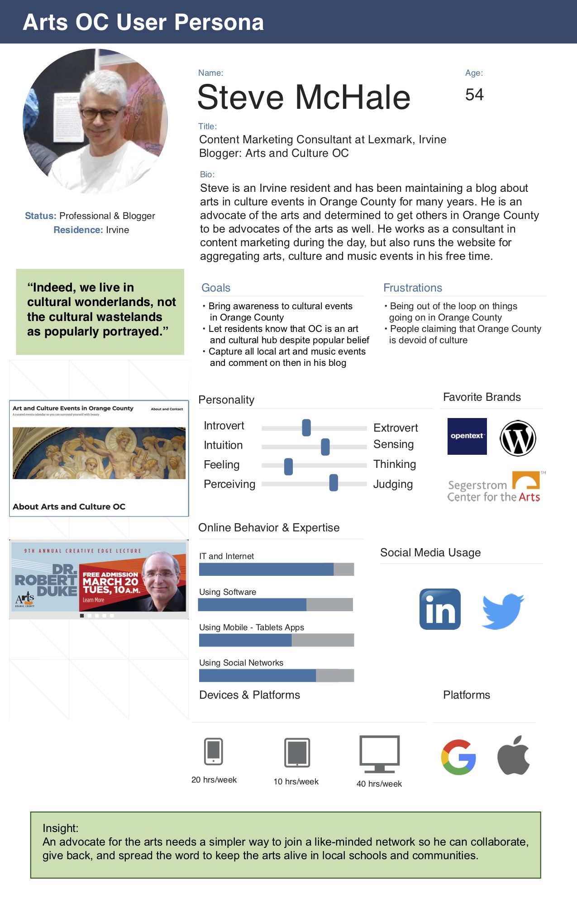
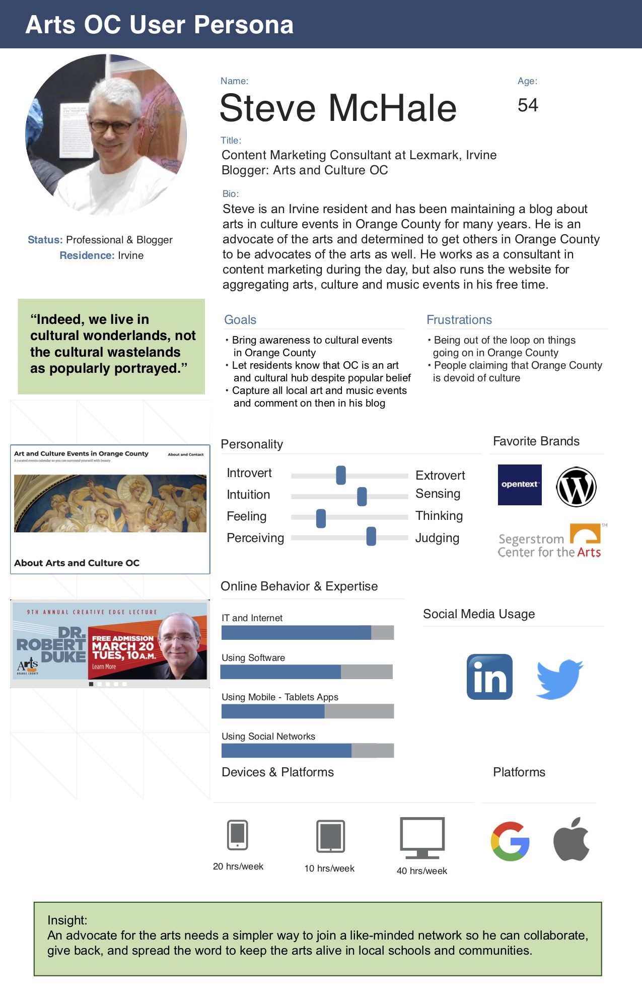
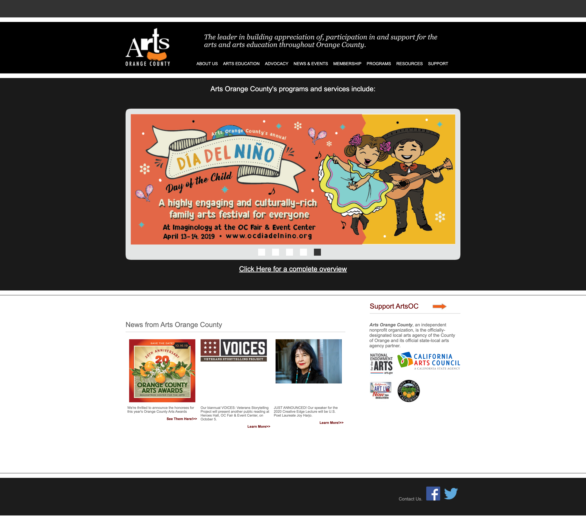

This project was a two week collaborative group project with my peers Shelley Leaton and Meena
Balasubramaniam. We were given the choice to redesign a website for a non-profit organization, and we
decided to go with something more local and relatable to us, so we ended up with Arts Orange County which is
a non-profit organization that advocates the arts in the community and local schools.
The main tasks that I focused on for this project consisted of creating the style guide, and redesigning a
responsive homepage.
Defining Our User
To help give us a starting point for our research, we developed a proto-persona of someone who wanted to be
more involved in the arts and provide more support to the arts.
 We conducted more research and got in contact with a user who actively supports the arts around Orange
County. Steve McHale runs a blog that advocates for arts, culture, and music around Orange County, and
actively encourages others to get more involved with the arts.

We conducted more research and got in contact with a user who actively supports the arts around Orange
County. Steve McHale runs a blog that advocates for arts, culture, and music around Orange County, and
actively encourages others to get more involved with the arts.

Addressing The Problem
Since we were working on a rather quick timeline of two weeks, we decided to address problems that stood out and were easy to fix. A few quick problems that we found with their current website included an unresponsive website, broken links, cluttered information pages, and a rather flat color scheme. This made for a rather unpleasant experience while navigating through the site.  We decided to walk through the process of what it was like to sign up to become a member of ArtsOC in order to address specific problems in detail. The current process was a long arduous process that required the user to dig through the website to find the sign-up, and then print out a pdf which they then had to fill out and either mail it or hand it in to ArtsOC in person.
Our Solution
In order to make the sign-up process more pleasant and streamlined, we changed the overall color palette and layout of the website, which is evident in the style guide. We used colors that were more vibrant and inviting, added an electronic sign-up form, and redesigned the homepage to include links to the sign up and images that were more inviting.
Style Guide